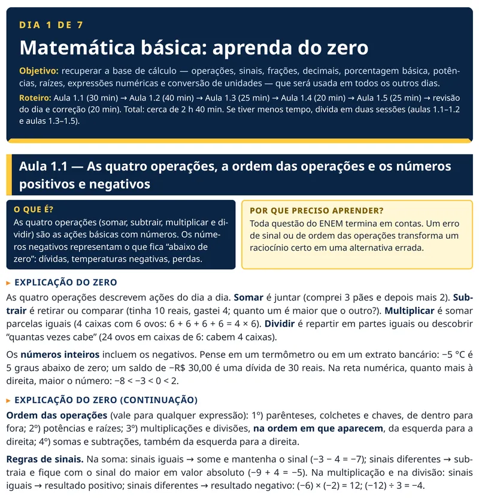
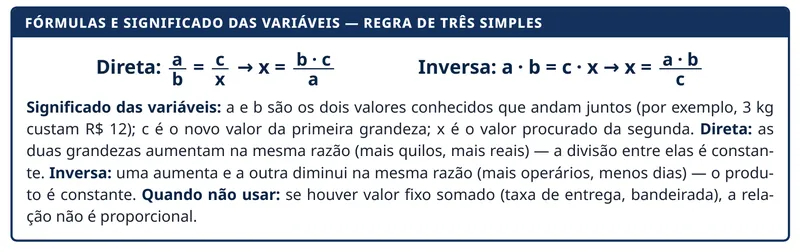
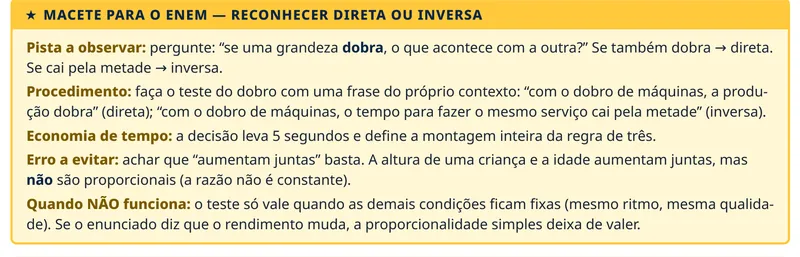
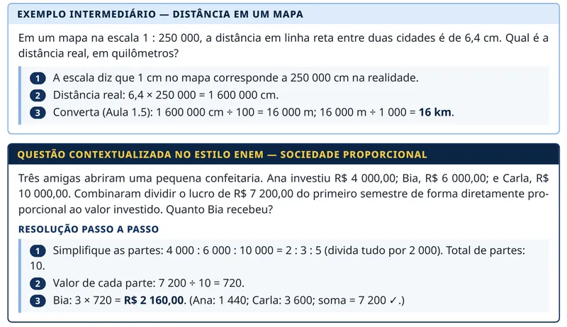
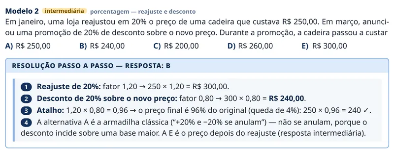
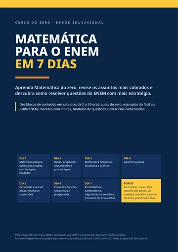

Conteúdo por nível
Do mais simples ao mais complexo, na ordem em que um assunto depende do outro.
REVISÃO INTENSIVA PARA O ENEM
Aprenda do básico aos assuntos mais cobrados com um plano de revisão organizado em 7 dias, exemplos resolvidos e macetes para interpretar melhor as questões.
R$ 12,50 + taxa de serviço de R$ 0,99 cobrada no checkout
Forma de acesso e entrega: conforme informado no checkout.
O problema nem sempre é falta de capacidade. Muitas vezes, é falta de uma sequência de estudos adequada e de explicações que realmente facilitem o entendimento.
Você não precisa estudar tudo de uma vez. Precisa saber por onde começar e como organizar sua revisão.
A SOLUÇÃO
O Matemática para o ENEM em 7 Dias é um ebook de revisão intensiva de Matemática para o ENEM. Cada aula segue a mesma sequência — o que é, por que aprender, explicação do zero, fórmulas, exemplos, questão no estilo ENEM, macete, pegadinhas e exercícios — para você sempre saber onde está.
Do mais simples ao mais complexo, na ordem em que um assunto depende do outro.
A ideia explicada com situações do dia a dia antes de qualquer fórmula.
O significado de cada letra, as unidades e quando a fórmula não serve.
Um exemplo muito fácil e um intermediário em cada aula, com todas as etapas.
Problemas com texto, tabela ou gráfico, no formato típico da prova.
Atalhos corretos, sempre com o limite de quando eles deixam de funcionar.
Questões de A a E em cada aula e na revisão de cada dia, com resolução comentada.
Simulado de 20 questões com gabarito comentado e indicação de onde revisar cada erro.
O QUE VOCÊ VAI APRENDER
São 10 blocos, do básico ao mais elaborado. Os primeiros constroem a base que os seguintes usam — por isso a ordem importa.
Operações, sinais, frações, decimais, potências, raízes e unidades: a base para todo o resto.
Escalas, velocidade, densidade e vazão — e como saber se a relação é direta ou inversa.
Aumentos, descontos, variações sucessivas, juros simples e compostos e parcelamentos.
Média, mediana e moda, e como ler gráficos de barras, linhas, setores e histogramas.
Ângulos, perímetros, áreas, círculo, Pitágoras e semelhança em terrenos, pisos e plantas.
Prismas, cilindros, cones, pirâmides e esferas: áreas, volumes e capacidade em litros.
Equações e sistemas, plano cartesiano, função afim (tarifas e consumo) e função quadrática.
Chances em sorteios, evento complementar e eventos independentes.
Princípio multiplicativo, fatorial, permutação, arranjo e combinação, sem decorar à toa.
Padrões, PA e PG, e as relações do triângulo retângulo (seno, cosseno e tangente).
COMO FUNCIONAM OS 7 DIAS
Cada dia tem aulas, exemplos, exercícios e uma revisão no final. O ebook sugere de 2 a 3 horas por dia; os tempos abaixo são as estimativas de cada dia (o Dia 7, com o simulado, é o mais longo).
Operações, frações, decimais, porcentagem básica, potências, raízes e conversão de unidades.
2 h 40 minGrandezas diretas e inversas, escalas, taxas, aumentos e descontos.
2 h 45 minJuros, parcelamentos, médias, mediana, moda e leitura de gráficos.
2 h 40 minÁreas, perímetros, círculo, Pitágoras, semelhança e escalas de área.
2 h 40 minSólidos, volumes e capacidade em litros e metros cúbicos.
2 h 25 minEquações, plano cartesiano, função afim e quadrática, PA e PG.
2 h 45 minRevisão geral, modelos de questões do ENEM e simulado de 20 questões comentadas. Pode ser dividido em dois.
3 h 30 minO ritmo depende da sua dedicação e do que você já sabe. Se tiver menos tempo, divida um dia em dois — o importante é manter a ordem.
DIFERENCIAIS
Entenda como resolver os cálculos sem precisar adivinhar qual operação utilizar.
Aprenda a identificar informações importantes, interpretar enunciados e evitar erros comuns.
Pratique com questões contextualizadas e inspiradas nos formatos utilizados pelo ENEM.
Teste seus conhecimentos e entenda o raciocínio utilizado em cada resposta.
Todas as questões foram criadas para este material, no estilo contextualizado do ENEM; nenhuma é reprodução de prova oficial.
POR DENTRO DO EBOOK
Trechos reais do PDF, recortados sem alteração de conteúdo. Toque em uma imagem para ampliar.

Ampliar
Ampliar
Ampliar
Ampliar
AmpliarPARA QUEM É
Uma observação honesta: o material é uma revisão intensiva. Ele não substitui todo o conteúdo do Ensino Médio nem garante uma nota ou aprovação específica. Temas menos frequentes, como desvio padrão, funções exponenciais e logaritmos, não têm aula própria: o ebook os indica para depois dos 7 dias, no plano de continuidade.
PERGUNTAS FREQUENTES
Não é necessário dominar todos os assuntos. O material começa com os fundamentos da Matemática e avança gradualmente.
O material foi organizado para uma revisão intensiva de sete dias, com uma sequência de conteúdos e cerca de 2 a 3 horas de estudo sugeridas por dia (o Dia 7 é o mais longo). O tempo necessário pode variar conforme sua base matemática e sua disponibilidade.
O ebook aborda Matemática básica, razão e proporção, porcentagem, matemática financeira, estatística, geometria plana e espacial, funções, probabilidade, combinatória, sequências e trigonometria básica.
Sim. São 146 questões autorais de múltipla escolha (A a E), todas com resolução comentada: diagnóstico inicial, exercícios em cada aula, revisão ao fim de cada dia, modelos de questões do ENEM e um simulado final de 20 questões.
Não. Trata-se de um produto digital em formato ebook (PDF). A forma de acesso e entrega segue as informações apresentadas no checkout.
Clique em qualquer botão de compra da página. Você será direcionado ao checkout oficial para concluir seu pedido. No checkout, o valor do ebook é R$ 12,50 (+ taxa de serviço de R$ 0,99 cobrada no checkout). Formas de pagamento exibidas: cartão de crédito, PIX, PicPay e Google Pay.
Não existe garantia de aprovação por meio de um material de estudos. O ebook oferece uma estrutura de revisão e prática para auxiliar sua preparação, mas os resultados dependem de diversos fatores, incluindo dedicação, conhecimento prévio e desempenho na prova.
Não. É um material independente de preparação. Os assuntos foram organizados a partir da Matriz de Referência do ENEM, publicada pelo INEP, e de levantamentos de questões de provas anteriores — o que não significa que um assunto vai cair na próxima prova.

Não espere chegar perto da prova para perceber que precisa revisar os fundamentos.
Tenha um caminho organizado para estudar os principais conteúdos de Matemática, praticar questões e compreender melhor os problemas do ENEM.
QUERO MEU EBOOK DE MATEMÁTICAR$ 12,50 + taxa de serviço de R$ 0,99 cobrada no checkout
O pagamento e as condições de acesso são apresentados no checkout oficial.